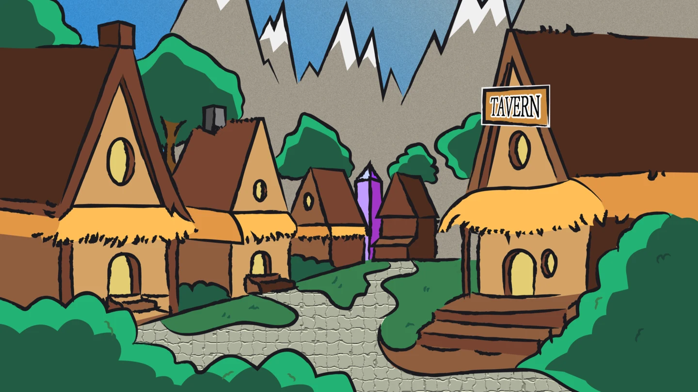
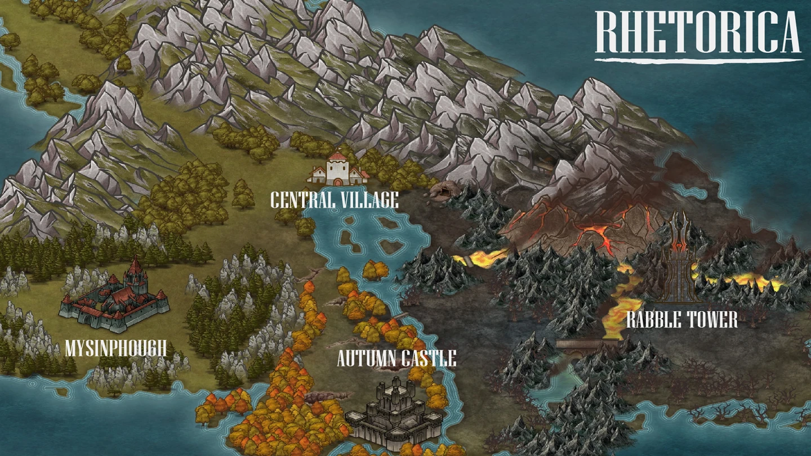
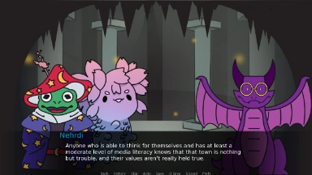
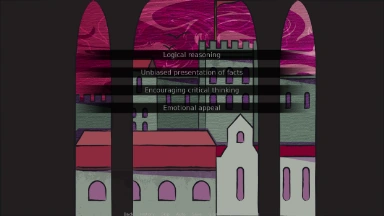

All projects
Visual novel · CCT286
Rhetorica
An illustrated fantasy adventure that turns rhetoric and media literacy into story choices.








Learning through dialogue
Players name their hero, move around the world using a map, and encounter characters who ask them to make choices. One exchange asks the player to put logos, pathos, or ethos to work in a conversation.
The story is organized into four modules. The interface combines dialogue, character illustrations, background art, and choices within a single adventure.
What it uses
- Ren’Py
- Branching dialogue
- Clickable navigation and character art
Project format
Collaborative coursework. The gallery combines artwork and scenes from the original game.